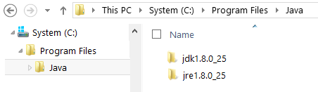
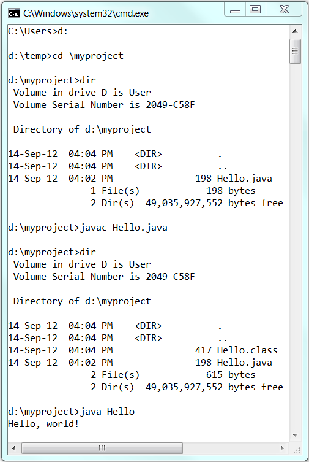
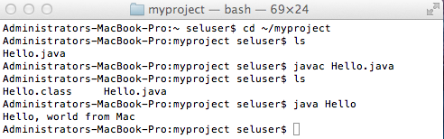

Java Development Kit (JDK), officially named "Java Platform Standard Edition (Java SE)", which is freely available from Sun Microsystems (now part of Oracle), is needed for writing Java programs. The mother site for JDK (Java SE) is http://www.oracle.com/technetwork/java/index.html.
"JDK" or "JRE"?
JRE (Java Runtime) is needed for running Java programs. JDK (Java Development Kit), which includes JRE plus the development tools (such as compiler and debugger), is need for writing as well as running Java programs. Since you are supposed to write Java Programs, you should install JDK, which includes JRE.
JDK Versions
The various JDK versions are:
- JDK Alpha and Beta (1995): Sun announced Java in September 23, 1995.
- JDK 1.0 (January 23, 1996): Originally called Oak (named after the oak tree outside James Gosling's office). Renamed to Java 1 in JDK 1.0.2.
- JDK 1.1 (February 19, 1997): Introduced AWT event model, inner class, JavaBean, JDBC, and RMI.
- J2SE 1.2 (JDK 1.2) (December 8, 1998): Re-branded as "Java 2" and renamed JDK to J2SE (Java 2 Standard Edition). Also released J2EE (Java 2 Enterprise Edition) and J2ME (Java 2 Micro Edition). Included JFC (Java Foundation Classes - Swing, Accessibility API, Java 2D, Pluggable Look and Feel and Drag and Drop). Introduced Collection Framework and JIT compiler.
- J2SE 1.3 (JDK 1.3) (May 8, 2000): Introduced Hotspot JVM.
- J2SE 1.4 (JDK 1.4) (February 6, 2002): Introduced assert, non-blocking IO (nio), logging API, image IO, Java webstart, regular expression support.
- J2SE 5.0 (JDK 1.5) (September 30, 2004): Officially called 5.0 instead of 1.5. Introduced generics, autoboxing/unboxing, annotation, enum, varargs, for-each loop, static import.
- Java SE 6 (JDK 1.6) (December 11, 2006): Renamed J2SE to Java SE (Java Standard Edition).
- Java SE 7 (JDK 1.7) (July 28, 2011): First version after Oracle purchased Sun (called Oracle JDK).
- Java SE 8 (JDK 1.8) (March 18, 2014): included support for Lambda expressions, default methods, and JavaScript runtime.
- Java SE 9: Expected in March 2017.
How To Install JDK on Windows
Step 0: Un-Install Older Version(s) of JDK/JRE
I recommend that you install only the latest JDK. Although you can install multiple versions of JDK concurrently, it is messy.
If you have previously installed older version(s) of JDK/JRE, un-install ALL of them. Goto "Control Panel" ⇒ "Program and Features" ⇒ Un-install ALL programs begin with "Java", such as "Java SE Development Kit ...", "Java SE Runtime ...", and etc.
Step 1: Download JDK
- Goto Java SE download site @ http://www.oracle.com/technetwork/java/javase/downloads/index.html.
- Under "Java Platform, Standard Edition" ⇒ "Java SE 8u{xx}", where {xx} is the latest update number ⇒ Click the "JDK Download" button.
- Check "Accept License Agreement".
- Choose your operating platform, e.g., "Windows x64" (for 64-bit Windows OS) or "Windows x86" (for 32-bit Windows OS). You can check whether your Windows OS is 32-bit or 64-bit via "Control Panel" ⇒ "System" ⇒ Under "System Type".
Step 2: Install JDK and JRE
Run the downloaded installer (e.g., "jdk-8u{xx}-windows-x64.exe"), which installs both the JDK and JRE. By default, the JDK will be installed in directory "C:\Program Files\Java\jdk1.8.0_xx", where xx denotes the latest upgrade number; and JRE in "C:\Program Files\Java\jre1.8.0_xx".
For novices, accept the defaults. Follow the screen instructions to install JDK and JRE.
Check the JDK installed directory by inspecting these folders using File Explorer. Take note of your JDK installed directory, which you will need in the next step.
 I shall refer to the JDK installed directory as <JAVA_HOME>, hereafter, in this article.
Step 3: Include JDK's "bin" Directory in the PATH
Windows OS searches the current directory and the directories listed in the PATH environment variable for executable programs. JDK's programs (such as Java compiler javac.exe and Java runtime java.exe) reside in directory "<JAVA_HOME>\bin" (where <JAVA_HOME> denotes the JDK installed directory). You need to include "<JAVA_HOME>\bin" in the PATH to run the JDK programs.
To edit the PATH environment variable in Windows XP/Vista/7/8/10:
- Launch "Control Panel" ⇒ "System" ⇒ Click "Advanced system settings".
- Switch to "Advanced" tab ⇒ "Environment Variables".
- Under "System Variables", scroll down to select "Path" ⇒ "Edit...".
- (CAUTION: Read this paragraph 3 times before doing this step! There is no UNDO)
For Windows 10: You see a table listing the existing PATH entries. Click "New" ⇒ Enter the JDK's binary directory "c:\Program Files\Java\jdk1.8.0_xx\bin" (Replacexxwith your installation's upgrade number!!!) ⇒ Select "Move Up" to move it all the way to the top.
Prior to Windows 10: In "Variable value" field, INSERT "c:\Program Files\Java\jdk1.8.0_xx\bin" (Replacexxwith your installation upgrade number!!!) IN FRONT of all the existing directories, followed by a semi-colon (;) which separates the JDK's binary directory from the rest of the existing directories. DO NOT DELETE any existing entries; otherwise, some existing applications may not run.Variable name : PATH Variable value : c:\Program Files\Java\jdk1.8.0_xx\bin;[exiting entries...]
Step 4: Verify the JDK Installation
Launch a CMD shell (Click "Start" button ⇒ run... ⇒ enter "cmd"; OR from "Start" button ⇒ All Programs ⇒ Accessories ⇒ Command Prompt).
- Issue "
path" command to list the contents of thePATHenvironment variable. Check to make sure that your<JAVA_HOME>\binis listed in thePATH.// Display the PATH entries prompt> path PATH=c:\Program Files\Java\jdk1.8.0_xx\bin;[other entries...]
Don't typeprompt>, which denotes the command prompt!!! Key in the command (highlighted) only. - Issue the following commands to verify that JDK/JRE are properly installed and display their version:
// Display the JRE version prompt> java -version java version "1.8.0_xx" Java(TM) SE Runtime Environment (build 1.8.0_xx-b13) Java HotSpot(TM) 64-Bit Server VM (build 25.5-b02, mixed mode) // Display the JDK version prompt> javac -version javac 1.8.0_xx
Step 5: Write a Hello-World Java Program
- Create a directory to keep your works, e.g., "
d:\myProject", or "c:\myProject", or any directory of your choice. Do NOT save your works in "Desktop" or "Documents" as their paths are hard to locate. The directory name shall not contain blank or special characters. Use meaningful but short name as it is easier to type. - Launch a programming text editor (such as TextPad or NotePad++ or Sublime Text). Begin with a new file and enter the following source code. Save the file as "
Hello.java", under your work directory (e.g.,d:\myProject)./* * First Java program to say Hello */ public class Hello { // Save as "Hello.java" under "d:\myProject" public static void main(String[] args) { System.out.println("Hello, world!"); } }
Step 6: Compile and Run the Hello-World Java Program
To compile the source code "Hello.java":
- Start a CMD Shell (Click the "Start" button ⇒ "run..." ⇒ Enter "cmd").
- Set the Current Drive to the drive where you saved your source file "
Hello.java". For example, suppose that your source file is saved in drive "d", enter "d:" as follow:prompt> d: D:\xxx>
Don't enterprompt>, which denotes the command prompt. - Set the Current Working Directory to the directory that you saved your source file via the
cd(Change Directory) command. For example, suppose that your source file is saved in directory "d:\myProject".
D:\xxx> cd \myProject D:\myProject>
- Issue a
dir(List Directory) command to confirm that your source file is present in the current directory.D:\myProject> dir ...... xx-xxx-xx 06:25 PM 277 Hello.java ......
- Invoke the JDK compiler "
javac" to compile the source code "Hello.java".D:\myProject> javac Hello.java
The compilation is successful if the command prompt returns. Otherwise, error messages would be shown. Correct the errors in your source file and re-compile. Check "Common JDK Installation Errors", if you encounter problem compiling your program. - The output of the compilation is a Java class called "
Hello.class". Issue adir(List Directory) command again to check for the output.D:\myProject> dir ...... xx-xxx-xx 01:53 PM 416 Hello.class xx-xxx-xx 06:25 PM 277 Hello.java ......
To run the program, invoke the Java Runtime "java":
D:\myProject> java Hello
Hello, world!
Everything that can possibly go wrong will go wrong: Read "JDK Installation Common Errors".
Step 7: (Optional) Download JDK API Documentation, Samples and Demos
The JDK download does not include the documentation, which needs to be downloaded separately. In the past, I always insist that my students should have a local copy of JDK API Documentation. But, today, you can easily access the online copy by googling "JDK 8 Documentation".
To install JDK API documentation:
- From the Java SE download page (@ http://www.oracle.com/technetwork/java/javase/downloads/index.html), under "Additional Resources", look for "Java SE 8 Documentation" ⇒ Download ⇒ Accept the license agreement ⇒ Download the zip-file (e.g., "
jdk-8u{xx}-apidocs.zip" - about 85MB). - Unzip into the JDK installed directory
<JAVA_HOME>. The documentation will be unzipped into "<JAVA_HOME>\docs". Browse the JDK documentation by opening "<JAVA_HOME>\docs\index.html".
You should also download the "JDK 8 Samples and Demos" from the Java SE download site.
Step 8: (For Advanced Users Only) JDK's Source Code
Source code for JDK is provided and kept in "<JAVA_HOME>\src.zip". I strongly recommend that you to go through some of the source files such as "String.java", "Math.java", and "Integer.java", under "java\lang".
Using TextPad for Java Programming (for Windows)

TextPad (@ www.textpad.com) is a lightweight programming text editor for writing toy Java programs. It can be configured to couple with the JDK, hence, bypassing the CMD shell.
From the TextPad editor, you can invoke the JDK compiler/runtime directly via "Tools" menu ⇒ External Tools ⇒ "Compile Java" or "Run Java Application". Take note of the keyboard shortcuts - Ctrl+1 for compile and Ctrl+2 for run.
If you cannot find these commands in the "Tools" menu, goto "Configure" ⇒ Preferences... ⇒ Tools ⇒ Add ⇒ JDK Commands.
TextPad Tips and Configuration
Check HERE!
Using NotePad++ for Java Programming (on Windows)
Notepad++ (@ http://notepad-plus-plus.org) is a free and open-source programming editor.
You can use NotePad++ to write your Java source code. But you need to use CMD shell to compile and run the Java program.
NotePad++ Customization and Tips
You can customize Notepad++ to compile and run Java programs with hot-keys. Read "NotePad++".
How to Install JDK on Mac
Step 1: Check if JDK has been Pre-Installed
In some Mac systems (earlier than Mac OS X 10.7 Lion), JDK has been pre-installed. To check if JDK has been installed, open a "Terminal" (Finder ⇒ Go ⇒ Utilities ⇒ Terminal) and issue this command:
javac -version
- If a JDK version number is returned (e.g.,
JDK 1.x.x), then JDK has already been installed. If the JDK version is prior to 1.7, proceed to Step 2 to install the latest JDK; otherwise, proceed to "Step 3: Write a Hello-world Java program". - If message "command not found" appears, JDK is NOT installed. Proceed to the "Step 2: Install JDK".
- If message "To open javac, you need a Java runtime" appears, select "Install" and follow the instructions to install JDK. Then, proceed to "Step 3: Write a Hello-world Java program".
Step 2: Download JDK
- Goto Java SE download site @ http://www.oracle.com/technetwork/java/javase/downloads/index.html. Under "Java Platform, Standard Edition" ⇒ "Java SE 8u{xx}" ⇒ Click the "JDK Download" button
- Check "Accept License Agreement"
- Choose your operating platform, e.g., "Mac OS X" (
jdk-8u{xx}-macosx-x64.dmg). Download the installer.
Step 3: Install JDK/JRE
- Double-click the downloaded Disk Image (DMG) file. Follow the screen instructions to install JDK/JRE.
- Eject the DMG file.
- To verify your installation, open a "Terminal" and issue these commands.
// Display the JDK version javac -version javac 1.x.x_xx // Display the JRE version java -version java version "1.x.x_xx" Java(TM) SE Runtime Environment (build 1.x.x_xx-xxx) Java HotSpot(TM) Client VM (build 22.1-b02, mixed mode, sharing) // Display the location of Java Compiler which javac /usr/bin/javac // Display the location of Java Runtime which java /usr/bin/java
Step 3: Write a Hello-World Java Program
- Create a directory called "
myProject" under your home directory (Launch "Finder" ⇒ "Go" ⇒ "Home"; Select "File" ⇒ "New Folder" ⇒ "myProject").
In Mac OS, the home directory of the current login user is denoted as "~". Hence, this new directory is represented as "~/myProject". - Use a programming text editor (such as jEdit, gedit, Sublime Text) to input the following source code and save as "
Hello.java" under the directory "~/myProject".
[If you use Mac OS's default text editor "TextEdit" (NOT recommended), you need to open a new file ⇒ choose "Format" ⇒ "Make Plain Text" ⇒ Enter the source code ⇒ Save as "Hello.java".]/* * My First Java program to say Hello */ public class Hello { // Save as "Hello.java" under "~/myProject" public static void main(String[] args) { System.out.println("Hello, world from Mac!"); } }
Step 4: Compile and Run the Hello-World Java Program
- To compile the source code "
Hello.java", open a new "Terminal" ("Go" ⇒ "Utilities" ⇒ "Terminal") and issue these commands (as illustrated):// Change Directory (cd) to where "Hello.java" resides cd ~/myProject // Check if "Hello.java" exists using list (ls) command ls Hello.java ...... // Compile "Hello.java" using JDK compiler "javac" javac Hello.java // If error message appears, correct your source code and re-compile // Check for the compiled output "Hello.class" ls Hello.class Hello.java ......
- To run the Hello-world, invoke the Java Runtime "
java" as follows:// Run "Hello.class" java Hello Hello, world from Mac!
How to Install JDK on Ubuntu
Read "How to Install JDK on Ubuntu".
First Java Program with Eclipse
- You need to first install Eclipse. Read "How to Install Eclipse".
- You can then proceed to write your first Java program. Read "Writing your first Java Program with Eclipse".
- Eclipse allow you to debug program graphically. Read "Debugging program in Eclipse".
First Java Program with NetBeans
- You need to first install NetBeans. Read "How to Install NetBeans".
- You can then proceed to write your first Java program. Read "Writing your first Java program with NetBeans".
- NetBeans allow you to debug program graphically. Read "Debugging program in NetBeans".
(Advanced) External JAR Files and Native Libraries
External Java packages (such as Servlet, MySQL Connector/J, JOGL, JUnit) are often distributed in JAR files (Java Archive - a single-file package of many Java classes), with possibly Native Libraries (".lib" and ".dll" in Windows, or ".a" and ".so" in Linux/Mac).
External JAR Files (".jar")
If external JAR files are not properly included:
- During the compilation, you will receive compilation error "cannot find symbol" on classes belonging to the external packages.
- During execution, you will get a runtime error "Could not find or load main class xxx" or "
NoClassDefFoundError".
To include external JAR files, you can either:
- Copy all the JAR files of the external packages to the Java's Extension Directories.
- For Windows, the JDK extension directory is located at "
<JAVA_HOME>\jre\lib\ext" (e.g., "c:\Program Files\Java\jdk1.8.0_xx\jre\lib\ext"). - For Mac, the JDK extension directories are "
/Library/Java/Extensions" and "/System/Library/Java/Extensions". - For Ubuntu, the JDK extension directories are "
<JAVA_HOME>/jre/lib/ext" (e.g., "/usr/user/java/jdk1.8.0_xx/jre/lib/ext") and "/usr/java/packages/lib/ext".
java.ext.dirs". You can print its contents viaSystem.out.println(System.getProperty("java.ext.dirs")). - For Windows, the JDK extension directory is located at "
- You can also include all the JAR files in the
CLASSPATHenvironment variable.CLASSPATHmay contain directories (of Java classes) or JAR files (single-file archive of Java classes). If you set theCLASSPATH, you must also include the current directory (denoted as ".").- For Windows, set the
CLASSPATHin Control Panel ⇒ System ⇒ Advanced system settings ⇒ Advanced ⇒ Environment Variables ⇒ System Variables ⇒ New ⇒ In "Variable name", enter "CLASSPATH" ⇒ In "Variable value", enter ".;path1\xxx.jar;path2\yyy.jar", where the entries are separated by a semi-colon (;). - For Linux and Mac OS: Edit
~/.profileor~/.bash_profile(or/etc/profilefor system-wide setting) to include the following line at the end of the file:export CLASSPATH=.:path1/xxx.jar:path2/yyy.jar
The entries are separated by colon (:).
- For Windows, set the
- You can also set the
CLASSPATHin thejavac/javacommand-line via the option-cp <paths>(or-classpath <paths>), for example,// Compile Java source code > javac -cp .:path1/xxx.jar:path2/yyy.jar ClassName.java // Run Java class > java -cp .:path1/xxx.jar:path2/yyy.jar ClassName
External Native Libraries (".lib", ".dll", ".a", ".so")
Some external package may provide static or shared native libraries in the form of ".lib" (Windows' static library), ".dll" (Windows' dynamically link library), ".a" (Unix's static library), or ".so" (Unix's shared library).
Native Libraries are to be kept in a directory accessible via JRE's Property "java.library.path", which normally but not necessarily includes all the directories in the PATH environment variable.
Native libraries are not involved in the compilation. But if they are not properly included during runtime time, you will get a runtime error "java.lang.UnsatisfiedLinkError: no xxx in java.library.path".
To include external native libraries:
- Copy the native libraries into a system library directory, e.g.,
c:\windows\system32(Windows),/usr/libor/usr/local/lib(Linux or Mac OS). You can verify that the directory is included in Java's System Property "java.library.path", viaSystem.out.println(System.getProperty("java.library.path")). - You can also set the native library path via the
java's command-line option-Djava.library.path=xxx, for example,> java -Djava.library.path=xxx ClassName
Eclipse/NetBeans
Using an IDE can greatly simplifies inclusion of external packages. Read "Eclipse How-To" or "NetBeans How-To".
Link to References & Resources